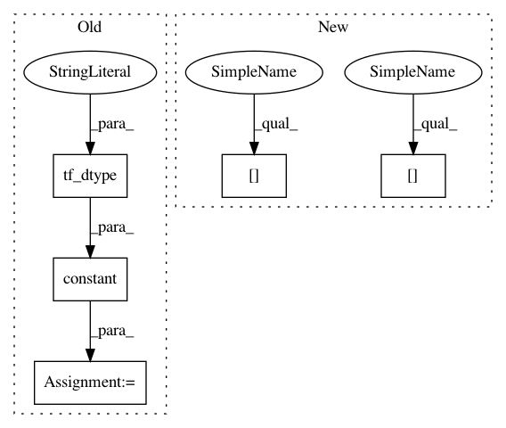

643b7511eccdaaaef63b9061bb16aa7c5bb3a9ed,tensorforce/core/models/model.py,Model,api_act,#Model#,852
Before Change
// Return timestep
with tf.control_dependencies(control_inputs=(updated_buffers,)):
// Trivial operation to enforce control dependency
zero = tf.constant(value=0, dtype=util.tf_dtype(dtype="long"))
timestep = self.global_timestep + zero
return actions, timestep
def api_observe(self):
After Change
with tf.control_dependencies(control_inputs=(updated_buffers,)):
// Function-level identity operation for retrieval (plus enforce dependency)
for name, spec in self.actions_spec.items():
actions[name] = util.identity_operation(
x=actions[name], dtype=spec["type"], operation_name=(name + "-output")
)
timestep = util.identity_operation(
x=self.global_episode, dtype="long", operation_name="timestep-output"
In pattern: SUPERPATTERN
Frequency: 3
Non-data size: 5
Instances
Project Name: reinforceio/tensorforce
Commit Name: 643b7511eccdaaaef63b9061bb16aa7c5bb3a9ed
Time: 2019-01-04
Author: alexkuhnle@t-online.de
File Name: tensorforce/core/models/model.py
Class Name: Model
Method Name: api_act
Project Name: reinforceio/tensorforce
Commit Name: 643b7511eccdaaaef63b9061bb16aa7c5bb3a9ed
Time: 2019-01-04
Author: alexkuhnle@t-online.de
File Name: tensorforce/core/models/model.py
Class Name: Model
Method Name: api_act
Project Name: reinforceio/tensorforce
Commit Name: ade4956483b34a295a0555886ee853f12998f8ff
Time: 2020-02-02
Author: alexkuhnle@t-online.de
File Name: tensorforce/core/models/model.py
Class Name: Model
Method Name: tf_initialize
Project Name: reinforceio/tensorforce
Commit Name: 82a059d89d5f5ebc77c6a3f0b8ac4072a3979104
Time: 2018-08-03
Author: alexkuhnle@t-online.de
File Name: tensorforce/core/networks/layer.py
Class Name: Nonlinearity
Method Name: __init__